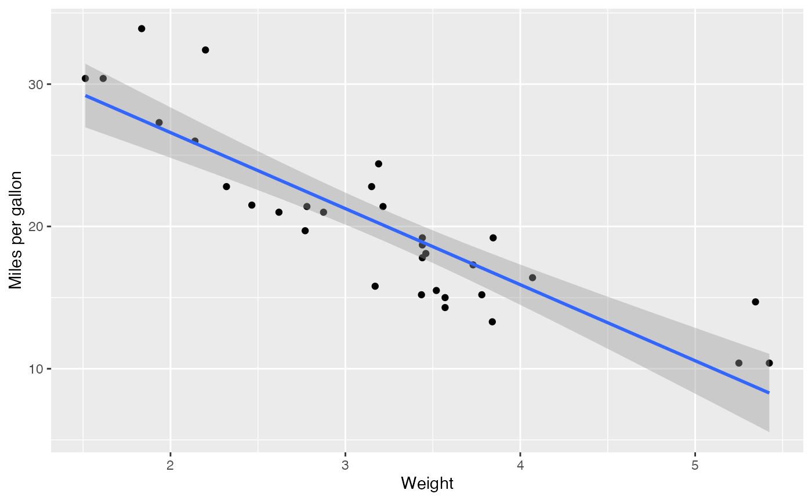

Introduction to tidyllm
tidyllm is an R package providing a unified interface for interacting with various large language model APIs. This vignette guides you through the basic setup and usage of tidyllm.
Installation
To install tidyllm from CRAN:
install.packages("tidyllm")Or install the development version from GitHub:
devtools::install_github("edubruell/tidyllm")Setting up API Keys
Set API keys as environment variables. The easiest way is to add them
to your .Renviron file (run
usethis::edit_r_environ()) and restart R:
ANTHROPIC_API_KEY="your-key-here"
OPENAI_API_KEY="your-key-here"Or set them temporarily in your session:
Sys.setenv(OPENAI_API_KEY = "your-key-here")| Provider | Environment Variable | Where to get a key |
|---|---|---|
| Claude (Anthropic) | ANTHROPIC_API_KEY |
Anthropic Console |
| OpenAI | OPENAI_API_KEY |
OpenAI API Keys |
| Google Gemini | GOOGLE_API_KEY |
Google AI Studio |
| Mistral | MISTRAL_API_KEY |
Mistral Console |
| Groq | GROQ_API_KEY |
Groq Console |
| Perplexity | PERPLEXITY_API_KEY |
Perplexity API Settings |
| DeepSeek | DEEPSEEK_API_KEY |
DeepSeek Platform |
| Voyage AI | VOYAGE_API_KEY |
Voyage AI Dashboard |
| OpenRouter | OPENROUTER_API_KEY |
OpenRouter Dashboard |
| Azure OpenAI | AZURE_OPENAI_API_KEY |
Azure Portal |
Running Local Models
tidyllm supports local inference via Ollama and llama.cpp. Both run entirely on your machine; no API key required.
For Ollama, install from ollama.com and pull a model:
ollama_download_model("qwen3.5:4b")For llama.cpp, see the Local Models article on the tidyllm website for a step-by-step setup guide.
Basic Usage
tidyllm is built around a
message-centric interface. Interactions work through a
message history created by llm_message() and passed to
verbs like chat():
library(tidyllm)
conversation <- llm_message("What is the capital of France?") |>
chat(claude())
conversation## Message History:
## system:
## You are a helpful assistant
## --------------------------------------------------------------
## user:
## What is the capital of France?
## --------------------------------------------------------------
## assistant:
## The capital of France is Paris.
## --------------------------------------------------------------
# Continue the conversation with a different provider
conversation <- conversation |>
llm_message("What's a famous landmark in this city?") |>
chat(openai())
get_reply(conversation)## [1] "A famous landmark in Paris is the Eiffel Tower."All API interactions follow the verb + provider pattern:
-
Verbs define the action:
chat(),embed(),send_batch(),check_batch(),fetch_batch(),list_batches(),list_models(),deep_research(),check_job(),fetch_job() -
Providers specify the API:
openai(),claude(),gemini(),ollama(),mistral(),groq(),perplexity(),deepseek(),voyage(),openrouter(),llamacpp(),azure_openai()
Provider-specific functions like openai_chat() or
claude_chat() also work directly and expose the full range
of parameters for each API.
Sending Images to Models
tidyllm supports sending images to multimodal models. Here we let a model describe a photo:
image_description <- llm_message("Describe this picture. Can you guess where it was taken?",
.imagefile = "picture.jpeg") |>
chat(openai(.model = "gpt-5.4"))
get_reply(image_description)## [1] "The picture shows a beautiful landscape with a lake, mountains, and a town nestled below. The area appears lush and green, with agricultural fields visible. This scenery is reminiscent of northern Italy, particularly around Lake Garda."Adding PDFs to Messages
Pass a PDF path to the .pdf argument of
llm_message(). The package extracts the text and wraps it
in <pdf> tags in the prompt:
llm_message("Summarize the key points from this document.",
.pdf = "die_verwandlung.pdf") |>
chat(openai(.model = "gpt-5.4"))## Message History:
## system:
## You are a helpful assistant
## --------------------------------------------------------------
## user:
## Summarize the key points from this document.
## -> Attached Media Files: die_verwandlung.pdf
## --------------------------------------------------------------
## assistant:
## The story centres on Gregor Samsa, who wakes up transformed
## into a giant insect. Unable to work, he becomes isolated
## while his family struggles. Eventually Gregor dies, and his
## relieved family looks ahead to a better future.
## --------------------------------------------------------------Specify page ranges with
.pdf = list(filename = "doc.pdf", start_page = 1, end_page = 5).
Sending R Outputs to Models
Use .f to capture console output from a function and
.capture_plot to include the last plot:
## Warning: package 'ggplot2' was built under R version 4.4.3## Warning: package 'tibble' was built under R version 4.4.3## Warning: package 'purrr' was built under R version 4.4.3## Warning: package 'lubridate' was built under R version 4.4.3
ggplot(mtcars, aes(wt, mpg)) +
geom_point() +
geom_smooth(method = "lm", formula = "y ~ x") +
labs(x = "Weight", y = "Miles per gallon")
llm_message("Analyze this plot and data summary:",
.capture_plot = TRUE,
.f = ~{summary(mtcars)}) |>
chat(claude())## Message History:
## system:
## You are a helpful assistant
## --------------------------------------------------------------
## user:
## Analyze this plot and data summary:
## -> Attached Media Files: file1568f6c1b4565.png, RConsole.txt
## --------------------------------------------------------------
## assistant:
## The scatter plot shows a clear negative correlation between
## weight and fuel efficiency. Heavier cars consistently
## achieve lower mpg, with the linear trend confirming this
## relationship. Variability around the line suggests other
## factors, engine size and transmission, also play a role.
## --------------------------------------------------------------Getting Replies from the API
get_reply() retrieves assistant text from a message
history. Use an index to access a specific reply, or omit it to get the
last:
conversation <- llm_message("Imagine a German address.") |>
chat(groq()) |>
llm_message("Imagine another address.") |>
chat(claude())
conversation## Message History:
## system:
## You are a helpful assistant
## --------------------------------------------------------------
## user:
## Imagine a German address.
## --------------------------------------------------------------
## assistant:
## Herr Müller
## Musterstraße 12
## 53111 Bonn
## --------------------------------------------------------------
## user:
## Imagine another address.
## --------------------------------------------------------------
## assistant:
## Frau Schmidt
## Fichtenweg 78
## 42103 Wuppertal
## --------------------------------------------------------------
conversation |> get_reply(1) # first reply## [1] "Herr Müller\nMusterstraße 12\n53111 Bonn"
conversation |> get_reply() # last reply (default)## [1] "Frau Schmidt\nFichtenweg 78\n42103 Wuppertal"Convert the message history (without attachments) to a tibble with
as_tibble():
conversation |> as_tibble()## # A tibble: 5 × 2
## role content
## <chr> <chr>
## 1 system "You are a helpful assistant"
## 2 user "Imagine a German address."
## 3 assistant "Herr Müller\nMusterstraße 12\n53111 Bonn"
## 4 user "Imagine another address."
## 5 assistant "Frau Schmidt\nFichtenweg 78\n42103 Wuppertal"get_metadata() returns token counts, model names, and
API-specific metadata for all assistant replies:
conversation |> get_metadata()## # A tibble: 2 × 6
## model timestamp prompt_tokens completion_tokens
## <chr> <dttm> <int> <int>
## 1 groq-… 2025-11-08 14:25:43 20 45
## 2 claud… 2025-11-08 14:26:02 80 40
## # ℹ 2 more variables: total_tokens <int>,
## # api_specific <list>The api_specific list column holds provider-only
metadata such as citations (Perplexity), thinking traces (Claude,
Gemini, DeepSeek), or grounding information (Gemini).
Listing Available Models
Use list_models() to query which models a provider
offers:
list_models(openai())
list_models(openrouter()) # 300+ models across providers
list_models(ollama()) # models installed locallyWorking with Structured Outputs
tidyllm supports JSON schema enforcement so models
return structured, machine-readable data. Use
tidyllm_schema() with field helpers to define your
schema:
-
field_chr(): text -
field_dbl(): numeric -
field_lgl(): boolean -
field_fct(.levels = ...): enumeration -
field_object(...): nested object (supports.vector = TRUEfor arrays)
person_schema <- tidyllm_schema(
first_name = field_chr("A male first name"),
last_name = field_chr("A common last name"),
occupation = field_chr("A quirky occupation"),
address = field_object(
"The person's home address",
street = field_chr("Street name"),
number = field_dbl("House number"),
city = field_chr("A large city"),
zip = field_dbl("Postal code"),
country = field_fct("Country", .levels = c("Germany", "France"))
)
)
profile <- llm_message("Imagine a person profile matching the schema.") |>
chat(openai(), .json_schema = person_schema)
profile## Message History:
## system:
## You are a helpful assistant
## --------------------------------------------------------------
## user:
## Imagine a person profile matching the schema.
## --------------------------------------------------------------
## assistant:
## {"first_name":"Julien","last_name":"Martin","occupation":"Gondola
## Repair Specialist","address":{"street":"Rue de
## Rivoli","number":112,"city":"Paris","zip":75001,"country":"France"}}
## --------------------------------------------------------------Extract the parsed result as an R list with
get_reply_data():
profile |> get_reply_data() |> str()## List of 4
## $ first_name: chr "Julien"
## $ last_name : chr "Martin"
## $ occupation: chr "Gondola Repair Specialist"
## $ address :List of 5
## ..$ street : chr "Rue de Rivoli"
## ..$ number : int 112
## ..$ city : chr "Paris"
## ..$ zip : int 75001
## ..$ country: chr "France"Set .vector = TRUE on field_object() to get
outputs that unpack directly into a data frame:
llm_message("Imagine five people.") |>
chat(openai(),
.json_schema = tidyllm_schema(
person = field_object(
first_name = field_chr(),
last_name = field_chr(),
occupation = field_chr(),
.vector = TRUE
)
)) |>
get_reply_data() |>
bind_rows()## first_name last_name occupation
## 1 Alice Johnson Software Developer
## 2 Robert Anderson Graphic Designer
## 3 Maria Gonzalez Data Scientist
## 4 Liam O'Connor Mechanical Engineer
## 5 Sophia Lee Content WriterIf the ellmer package is installed, you can use
ellmer type objects (ellmer::type_string(),
ellmer::type_object(), etc.) directly as field definitions
in tidyllm_schema() or as the .json_schema
argument.
API Parameters
Common arguments like .model, .temperature,
and .json_schema can be set directly in verbs like
chat(). Provider-specific arguments go in the provider
function:
# Common args in the verb
llm_message("Write a haiku about tidyllm.") |>
chat(ollama(), .temperature = 0)
# Provider-specific args in the provider
llm_message("Hello") |>
chat(ollama(.ollama_server = "http://my-server:11434"), .temperature = 0)When an argument appears in both chat() and the provider
function, chat() takes precedence. If a common argument is
not supported by the chosen provider, chat() raises an
error rather than silently ignoring it.
Tool Use
Define R functions that the model can call during a conversation.
Wrap them with tidyllm_tool():
get_current_time <- function(tz, format = "%Y-%m-%d %H:%M:%S") {
format(Sys.time(), tz = tz, format = format, usetz = TRUE)
}
time_tool <- tidyllm_tool(
.f = get_current_time,
.description = "Returns the current time in a specified timezone.",
tz = field_chr("The timezone identifier, e.g. 'Europe/Berlin'."),
format = field_chr("strftime format string. Default: '%Y-%m-%d %H:%M:%S'.")
)
llm_message("What time is it in Stuttgart right now?") |>
chat(openai(), .tools = time_tool)## Message History:
## system:
## You are a helpful assistant
## --------------------------------------------------------------
## user:
## What time is it in Stuttgart right now?
## --------------------------------------------------------------
## assistant:
## The current time in Stuttgart (Europe/Berlin) is 2025-03-03
## 09:51:22 CET.
## --------------------------------------------------------------When a tool is provided, the model can request its execution, tidyllm runs it in your R session, and the result is fed back automatically. Multi-turn tool loops (where the model makes several tool calls) are handled transparently.
If you use ellmer, convert existing ellmer tool
definitions with ellmer_tool():
library(ellmer)
btw_tool <- ellmer_tool(btw::btw_tool_files_list_files)
llm_message("List files in the R/ folder.") |>
chat(claude(), .tools = btw_tool)For a detailed guide, see the Tool Use article on the tidyllm website.
Embeddings
Generate vector representations of text with embed().
The output is a tibble with one row per input:
c("What is the meaning of life?",
"How much wood would a woodchuck chuck?",
"How does the brain work?") |>
embed(ollama())## # A tibble: 3 × 2
## input embeddings
## <chr> <list>
## 1 What is the meaning of life? <dbl [384]>
## 2 How much wood would a woodchuck chuck? <dbl [384]>
## 3 How does the brain work? <dbl [384]>Voyage AI supports multimodal embeddings, meaning text and images share the same vector space:
voyage_rerank() re-orders documents by relevance to a
query:
voyage_rerank(
"best R package for LLMs",
c("tidyllm", "ellmer", "httr2", "rvest")
)Batch Requests
Batch APIs (Claude, OpenAI, Mistral, Groq, Gemini) process large
numbers of requests overnight at roughly half the cost of standard
calls. Use send_batch() to submit,
check_batch() to poll status, and
fetch_batch() to retrieve results:
# Submit a batch and save the job handle to disk
glue::glue("Write a poem about {x}", x = c("cats", "dogs", "hamsters")) |>
purrr::map(llm_message) |>
send_batch(claude()) |>
saveRDS("claude_batch.rds")
# Check status
readRDS("claude_batch.rds") |>
check_batch(claude())## # A tibble: 1 × 8
## batch_id status created_at expires_at req_succeeded
## <chr> <chr> <dttm> <dttm> <int>
## 1 msgbatch_02A1B2C… ended 2025-11-01 10:30:00 2025-11-02 10:30:00 3
## # ℹ 3 more variables: req_errored <int>, req_expired <int>, req_canceled <int>
# Fetch completed results
conversations <- readRDS("claude_batch.rds") |>
fetch_batch(claude())
poems <- purrr::map_chr(conversations, get_reply)check_job() and fetch_job() are
type-dispatching aliases; they work on both batch objects and Perplexity
research jobs (see deep_research() below).
Deep Research
For long-horizon research tasks, deep_research() runs an
extended web search and synthesis. Perplexity’s
sonar-deep-research model is currently supported:
# Blocking: waits for completion, returns an LLMMessage
result <- llm_message("Compare Rust and Go for systems programming in 2025.") |>
deep_research(perplexity())
get_reply(result)
get_metadata(result)$api_specific[[1]]$citations
# Background mode: returns a job handle immediately
job <- llm_message("Summarise recent EU AI Act developments.") |>
deep_research(perplexity(), .background = TRUE)
check_job(job) # poll status
result <- fetch_job(job) # retrieve when completeStreaming
Stream reply tokens to the console as they are generated with
.stream = TRUE:
llm_message("Write a short poem about R.") |>
chat(claude(), .stream = TRUE)Streaming is useful for monitoring long responses interactively. For production data-analysis workflows the non-streaming mode is preferred because it provides complete metadata and is more reliable.
Choosing the Right Provider
| Provider | Strengths and tidyllm-specific features |
|---|---|
openai() |
Top benchmark performance across coding, math, and reasoning;
o3/o4 reasoning models |
claude() |
Best-in-class coding (SWE-bench leader);
.thinking = TRUE for extended reasoning; Files API for
document workflows; batch |
gemini() |
1M-token context window; video and audio via file upload API; search
grounding; .thinking_budget for reasoning; batch |
mistral() |
EU-hosted, GDPR-friendly; Magistral reasoning models; embeddings; batch |
groq() |
Fastest available inference (300-1200 tokens/s);
groq_transcribe() for Whisper audio;
.json_schema; batch |
perplexity() |
Real-time web search with citations in metadata;
deep_research() for long-horizon research; search domain
filter |
deepseek() |
Top math and reasoning benchmarks at very low cost;
.thinking = TRUE auto-switches to
deepseek-reasoner
|
voyage() |
State-of-the-art retrieval embeddings; voyage_rerank();
multimodal embeddings (text + images);
.output_dimension
|
openrouter() |
500+ models via one API key; automatic fallback routing;
openrouter_credits() and per-generation cost tracking |
ollama() |
Local models with full data privacy; no API costs;
ollama_download_model() for model management |
llamacpp() |
Often the most performant local inference stack; BNF grammar
constraints (.grammar); logprobs via
get_logprobs(); llamacpp_rerank(); model
management |
azure_openai() |
Enterprise Azure deployments of OpenAI models; batch support |
For getting started with local models (Ollama and llama.cpp), see the Local Models article on the tidyllm website.
Setting a Default Provider
Avoid specifying a provider on every call by setting options:
options(tidyllm_chat_default = openai(.model = "gpt-5.4"))
options(tidyllm_embed_default = ollama())
options(tidyllm_sbatch_default = claude(.temperature = 0))
options(tidyllm_cbatch_default = claude())
options(tidyllm_fbatch_default = claude())
options(tidyllm_lbatch_default = claude())
# Now the provider argument can be omitted
llm_message("Hello!") |> chat()
c("text one", "text two") |> embed()